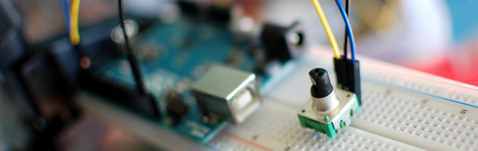

Rotary Encoder + Arduino

One of the first things anyone does when they start working with the Arduino is to connect it to a potentiometer and control the brightness of and LED or move a servo. Well, a rotary encoder may look like a potentiometer, but other than also having a knob, it is basically the complete opposite.
A rotary encoder is a device that you can rotate infinitely. Simple ones like this one I got from sparkfun have no real state like a pot does, so when you start up, you won't be able to simply read from the encoder where it is turned to. But because you can keep turning it it has no beginning, middle or end anyways. However, if you keep track of that rotation in code, you can use it as a knob input you can turn up or down as much as you would like.
On most rotary encoders, when you rotate them, you will feel a bump. These are known as steps, and most rotary encoders like this guy have about 12 of these per rotation. But some have 200 or more. Basically this step is the minimum amount you can rotate the encoder to register any change.
Most simple encoders like this only make use of 3 pins, and one of those is ground. Those other two pins change state and are always either high or low, so they can only have a total of 4 combinations. 00, 01, 10, and 11. This is known as 2 bit gray code. So when you turn it, the arduino can say... Well you were at 01, and now you are at 00 so you move this way. Or you were at 01, but now you are at 10 so you must have moved the other way. You can see that this encoder has 5 pins, the other 2 are just a simple switch that is engaged when you press down. (see the second illustration on the right)
It sounds super simple, and it kinda is, but what we can do is every time a value changes we can check what direction it moved. Then if we increment a value every time it turned one way, and deincrement it when we move one step the other, we can keep track of how much it has moved since we started. So if you want a knob that can turn up to 11, this is your guy. (there is a double pun in there I promise)
So, the really funky thing about a rotary encoder is for it to work, we need to know every time those values change. This can be hard because if the arduino is in the middle of doing something, like delay(1000) or what have you, we will miss the change. So we need a way to say to the arduino "I don't care what you are doing, or when you are doing it, if you see any of these two pins change state, you drop everything and attend to them". To do this we need something called interrupts.
{kind=link}
Hookup for just the encoder without the integrated pushbutton

Hookup for encoder and the integrated pushbutton
Interrupts Are Magic
Interrupt pins are special pins that can stop your arduino and force it to do something else before it moves on. Because they are special pins you only get a few of them on your arduino, but these pins can watch for any CHANGE (high to low / low to high), FALLING (high to low) or RISING (low to high). You can attach interrupt functions to these pins, so if a change happens, it will drop everything and run that function. It gets funky as it breaks the basic linear nature of the arduino loop, but can become the most powerful thing when you get the hang of it.
Any global variables that are used inside these functions have a special name. They are called volatile variables, and for good reason. Their values can change at any time. So if you use a volatile twice in your loop, it may not be the same value the second time if it was change during an interrupt function.
Code
To keep track of the rotary encoder we are going to do something that will look really weird, so bear with me. The encoder has 2 digital pins that are either HIGH (1) or LOW (0) right? If we treat the pins as binary, we read them as 00, 01, 10, or 11. The sequence the encoder outputs while spinning clockwise is 00, 01, 11, 10 repeat. So if you have a reading of 01, the next reading can either be 00 or 11 depending on the direction the knob is turned. So by adding the previous encoded value to the beginning of the current encoded value we get 1 of 8 possible numbers (0001, 0010, 0100, 0111, 1000, 1011, 1110 & 1101) 1101, 0100, 0010 & 1011 all mean cockwise movement. 1110, 0111, 0001 & 1000 are all counter-clockwise.
So now we can say this: (sum is last reading + current reading)
if(sum == 0b1101 || sum == 0b0100 || sum == 0b0010 || sum == 0b1011) encoderValue ++; //clockwise movement if(sum == 0b1110 || sum == 0b0111 || sum == 0b0001 || sum == 0b1000) encoderValue --; //counter-clockwise movement
If we wanted to treat the binary as decimal numbers we could even shorten that to this:
if(sum == 13 || sum == 4 || sum == 2 || sum == 11) encoderValue ++; if(sum == 14 || sum == 7 || sum == 1 || sum == 8 ) encoderValue --;
Without pushbutton code
//From bildr article: http://bildr.org/2012/08/rotary-encoder-arduino/ //these pins can not be changed 2/3 are special pins int encoderPin1 = 2; int encoderPin2 = 3; volatile int lastEncoded = 0; volatile long encoderValue = 0; long lastencoderValue = 0; int lastMSB = 0; int lastLSB = 0; void setup() { Serial.begin (9600); pinMode(encoderPin1, INPUT); pinMode(encoderPin2, INPUT); digitalWrite(encoderPin1, HIGH); //turn pullup resistor on digitalWrite(encoderPin2, HIGH); //turn pullup resistor on //call updateEncoder() when any high/low changed seen //on interrupt 0 (pin 2), or interrupt 1 (pin 3) attachInterrupt(0, updateEncoder, CHANGE); attachInterrupt(1, updateEncoder, CHANGE); } void loop(){ //Do stuff here Serial.println(encoderValue); delay(1000); //just here to slow down the output, and show it will work even during a delay } void updateEncoder(){ int MSB = digitalRead(encoderPin1); //MSB = most significant bit int LSB = digitalRead(encoderPin2); //LSB = least significant bit int encoded = (MSB << 1) |LSB; //converting the 2 pin value to single number int sum = (lastEncoded << 2) | encoded; //adding it to the previous encoded value if(sum == 0b1101 || sum == 0b0100 || sum == 0b0010 || sum == 0b1011) encoderValue ++; if(sum == 0b1110 || sum == 0b0111 || sum == 0b0001 || sum == 0b1000) encoderValue --; lastEncoded = encoded; //store this value for next time }
With pushbutton code
//From bildr article: http://bildr.org/2012/08/rotary-encoder-arduino/ //these pins can not be changed 2/3 are special pins int encoderPin1 = 2; int encoderPin2 = 3; int encoderSwitchPin = 4; //push button switch volatile int lastEncoded = 0; volatile long encoderValue = 0; long lastencoderValue = 0; int lastMSB = 0; int lastLSB = 0; void setup() { Serial.begin (9600); pinMode(encoderPin1, INPUT); pinMode(encoderPin2, INPUT); pinMode(encoderSwitchPin, INPUT); digitalWrite(encoderPin1, HIGH); //turn pullup resistor on digitalWrite(encoderPin2, HIGH); //turn pullup resistor on digitalWrite(encoderSwitchPin, HIGH); //turn pullup resistor on //call updateEncoder() when any high/low changed seen //on interrupt 0 (pin 2), or interrupt 1 (pin 3) attachInterrupt(0, updateEncoder, CHANGE); attachInterrupt(1, updateEncoder, CHANGE); } void loop(){ //Do stuff here if(digitalRead(encoderSwitchPin2)){ //button is not being pushed }else{ //button is being pushed } Serial.println(encoderValue); delay(1000); //just here to slow down the output, and show it will work even during a delay } void updateEncoder(){ int MSB = digitalRead(encoderPin1); //MSB = most significant bit int LSB = digitalRead(encoderPin2); //LSB = least significant bit int encoded = (MSB << 1) |LSB; //converting the 2 pin value to single number int sum = (lastEncoded << 2) | encoded; //adding it to the previous encoded value if(sum == 0b1101 || sum == 0b0100 || sum == 0b0010 || sum == 0b1011) encoderValue ++; if(sum == 0b1110 || sum == 0b0111 || sum == 0b0001 || sum == 0b1000) encoderValue --; lastEncoded = encoded; //store this value for next time }
Article taken from bildr.org with minor changes - I am the original author of this content